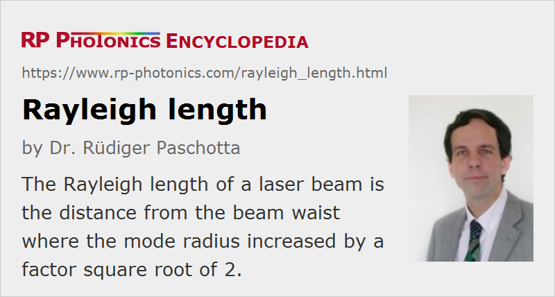

Rayleigh Length
Definition: the distance from a beam waist where the mode radius increased by a factor square root of 2
German: Rayleigh-Länge
Formula symbol: zR
Units: m
How to cite the article; suggest additional literature
Author: Dr. Rüdiger Paschotta
The Rayleigh length (or Rayleigh range) of a laser beam is the distance from the beam waist (in the propagation direction) where the beam radius is increased by a factor of the square root of 2. For a circular beam, this means that the mode area is doubled at this point.
For Gaussian beams, the Rayleigh length is determined by the waist radius w0 and the wavelength λ:
where the wavelength λ is the vacuum wavelength divided by the refractive index n of the material.
For beams with imperfect beam quality and a given waist radius, the Rayleigh length is effectively decreased by the so-called M2 factor. This implies that such beams have a larger beam divergence for a given beam waist radius.
Effective Rayleigh Length
The effective Rayleigh length is a convenient quantity for calculations in the context of focused laser beams. Essentially, it determines the depth of focus. There can thus be a trade-off between a more strongly focused beam with higher optical intensity in the focus, and a less strongly focused beam with longer Rayleigh length, i.e. larger depth of focus. For example, the highest laser gain in a laser medium can be achieved when the focused pump beam has a Rayleigh length of the order of the length of the gain medium: weaker focusing reduces the pump intensity, whereas stronger focusing leads to a strong divergence, which limits the effective interaction length. Similar arguments apply to nonlinear interactions, e.g. frequency doubling, even though some more sophisticated aspects such as the Gouy phase shift come into play in such situations, where phase matching is important.
The article on laser beams contains a paragraph titled “Limitations for the Focusing of Laser Beams”, where the effective Rayleigh length plays an important role.
The older literature often uses the confocal parameter b, which is two times the Rayleigh length.
Questions and Comments from Users
Here you can submit questions and comments. As far as they get accepted by the author, they will appear above this paragraph together with the author’s answer. The author will decide on acceptance based on certain criteria. Essentially, the issue must be of sufficiently broad interest.
Please do not enter personal data here; we would otherwise delete it soon. (See also our privacy declaration.) If you wish to receive personal feedback or consultancy from the author, please contact him e.g. via e-mail.
By submitting the information, you give your consent to the potential publication of your inputs on our website according to our rules. (If you later retract your consent, we will delete those inputs.) As your inputs are first reviewed by the author, they may be published with some delay.
See also: Gaussian beams, laser beams, collimated beams, Gouy phase shift, beam quality, wavelength
and other articles in the category general optics
|  |
If you like this page, please share the link with your friends and colleagues, e.g. via social media: 


These sharing buttons are implemented in a privacy-friendly way! |
2020-04-15
How to calculate a high-order fiber mode's Rayleigh length? For example, consider a high power fiber laser output beam.
Answer from the author:
Fiber mode as such does not have a Rayleigh length; by definition, its amplitude profile does not diverge. Outside the fiber (in free space) it does diverge, and there you could calculate an effective Rayleigh length for each mode. Higher-order modes would generally have shorter values of that length. The calculation could be based on numerical beam propagation, for example.